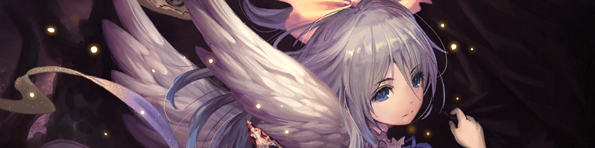

Guía de viales de Resurgent Legends
Zones
Diciembre 31, 2023
Predigo cambios significativos en las cartas poco después del lanzamiento de esta guía, específicamente para Mysteria Rune y posiblemente para Last Words Shadow, así que tomen todas las calificaciones en torno a eso con un ligero grano de sal.
Forestal
Princesa Rafflesia: Tal vez
No anticipo que los mazos de Forest sean particularmente mejores que Magachiyo o Castelle, y desafortunadamente Rafflesia Princess es un verdadero apestoso en cualquiera de esas listas.
Guerrero polar: Vial
Tal vez sea una predicción un poco polarizadora de mi parte, pero no estoy impresionado con esta carta. Se siente como una carta de pago completamente poco impresionante a menos que vayamos a encontrar una manera de darle Tormenta cuando lo comparas con Tam Lin. Agárrate a él si crees que tendremos una manera de darle Tormenta.
Devorador de bosques: Mantener
Los mazos de Magachiyo están jugando esta carta en varios números, ya que si bien la perspicacia es un gran efecto, ser un objetivo de búsqueda para Feral Awakening puede ser un poco incómodo cuando esperabas encontrar a Durga. La tendencia actual parece ser reducir el número de Despertares Salvajes.
Imperial
Carlomagno, el Gran Unificador: Mantener
Neutral Sword parece un poco tímido para ser coherentemente poderoso. Tus cartas de mayor recompensa son las cartas evo, que Carlomagno permite dobles. También hay algunas aplicaciones con la transformación de cartas en neutrales, pero en general el problema con esta estrategia es la falta de un final ganador absoluto.
Caballero de mente alta: Mantener
No es la carta más agresiva para Neutral Sword, pero le da mucha capacidad de supervivencia a Sword en un metagame ultrarrápido, lo que la convierte en una opción razonable a tener en cuenta.
Bucanero Bruto: Vial
Clash for Loot es fuerte, pero pagar 4 por ese efecto parece realmente sospechoso.